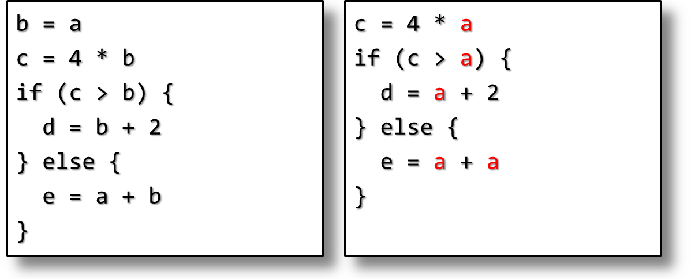
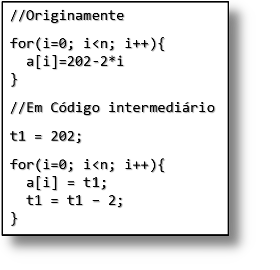
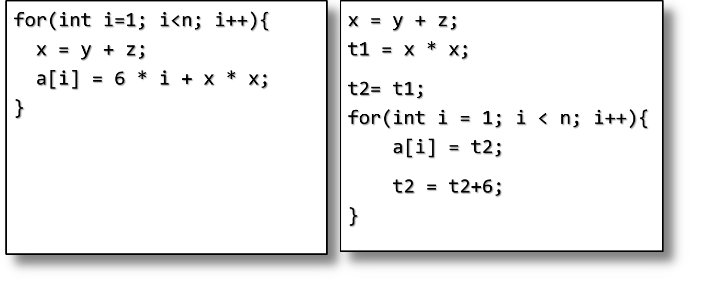
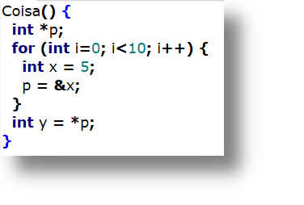
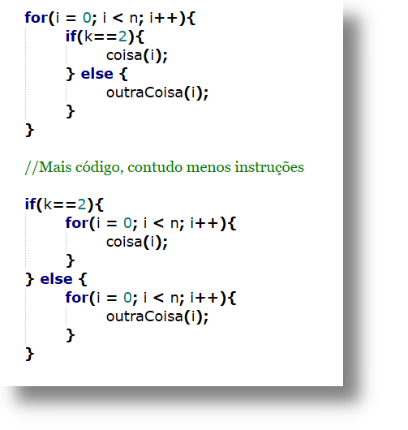

Frank Coelho de Alcantara -2021
Reduzir o custo computacional de rotinas repetidas (DAG).
Reduzir o número de variáveis utilizadas (registradores).
Utilizar melhor as características únicas de cada hardware.
Centenas, talvez milhares de otimizações diferentes (qual?).
Sempre que existir uma operação entre dois literais, execute esta operação.
Com esta otimização seu código pode ser mais claro.
O programador usa: $$tempo = 30 * MINUTOS\_POR\_DIA; $$
O interpretador vê: $$tempo = 43200;$$
Se sabemos que, em um determinado ponto do programa, uma variável tem um valor constante, substituímos a referência à variável por este valor constante.
Não é uma otimização simples, precisamos conhecer o fluxo de dado e encontrar o valor da variável em todos os cenários possíveis.
Fica mais simples se o código estiver na forma de SSA
Depois de atribuirmos o valor de $A$ a $B$, a referência de $A$ em $B$ pode ser substituída pelo valor de $A$, até que uma nova atribuição ocorra em $A$ ou $B$.
Não é uma otimização simples, precisamos conhecer o fluxo de dado e encontrar o valor da variável em todos os cenários possíveis.
Fica mais simples se o código estiver na forma de SSA
Outro grafo relacionando cada definição de variável a todos os usos desta variável.
Computacionalmente muito caro: uma variável com $d$ definições e $u$ usos terá complexidade $O(d\times u)$.
Vamos simplificar este processo definindo cada variável apenas uma vez?
E assim nasceu o SSA dentro da IBM.
Método para estruturar o código intermediário de forma que cada variável seja atribuída apenas uma vez.
A ideia é remover possíveis redundâncias no uso de variáveis.
Precisamos encontrar todos os pontos onde uma variável é usada.
Outra estrutura de dados: Cadeias de definição de uso def. use chain.
Quando voltamos de um $if$, por exemplo, como podemos saber que variável usar?
Infelizmente este é um problema insolúvel. Não há como determinar isso de forma autônoma.
Então, vamos usar uma função alternativa $a3 := \Phi (a1, a2)$ que indica que $a3$ pode receber $a1$ ou $a2$ dependendo do fluxo do programa.
E assim nasceu o SSA dentro da IBM..
Usamos as regras da álgebra.
Não otimizado: $((4*(a + b))/ (4*a))*c$.
Otimizado: $c + (b*c)/a$. A grande pergunta é: você vai deixar o interpretador fazer isso?
Divisão por zero? Overflow?
Verificação de overflow tem impacto direto na interpretação.
| GCC 9 | clang 9 | |
|---|---|---|
| no trapping | 0.17 ns/int | 0.11 ns/int |
| trapping | 2.1 ns/int | 0.32 ns/int |
| slowdown | 12 x | 3 x |
Fonte: Daniel Lemire (2020)
Algumas operações são computacionalmente mais caras em arquiteturas diferentes.
Infelizmente este é um problema insolúvel. Não há como determinar isso de forma autônoma.
A otimização mais comum é substituir multiplicações por somas.
$a = b/16 \Rightarrow a = b >> 4$
$a = b*64 \Rightarrow a = b << 6$
$a = b*15 \Rightarrow a = (b<<4) – b$
Dependem do processador e do número que está sendo operado.
Por outro lado, o processo de substituição é simples e direto.
Remover dos laços todo o código que não está sendo alterado dentro do código.
No exemplo há outra otimização: strength reduction.
Verificar e ajustar o uso de variáveis de acordo com seu tempo de vida, ou referências.
Em C++ isso não é fácil.
Economiza todo o custo de chamar a função e voltar.
Algumas linguagens possuem indicadores para provocar isso: inline in C++.
Economiza memória no stack, abre espaço para outras otimizações locais.
Precisa tomar cuidado com o excesso de uso.
Não é raro que o processo interno de um laço não seja relacionado ao laço.
Também não é raro que isso possa ser modificado se o laço for modificado..
Economiza memória no stack, abre espaço para outras otimizações locais.
Precisa tomar cuidado com o excesso de uso.
